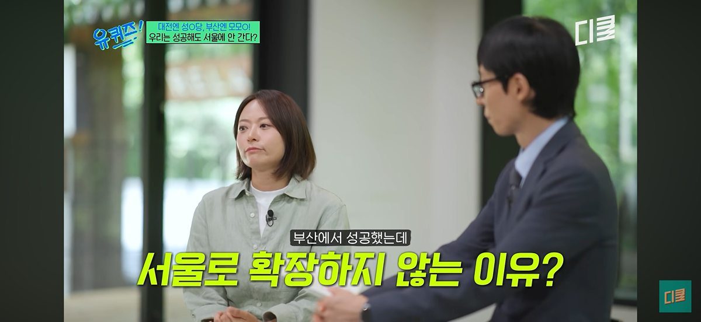
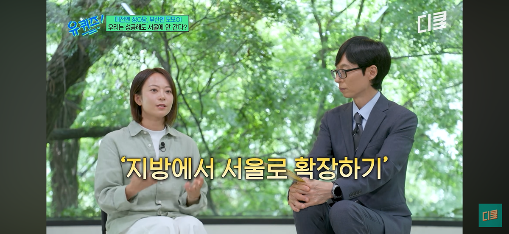
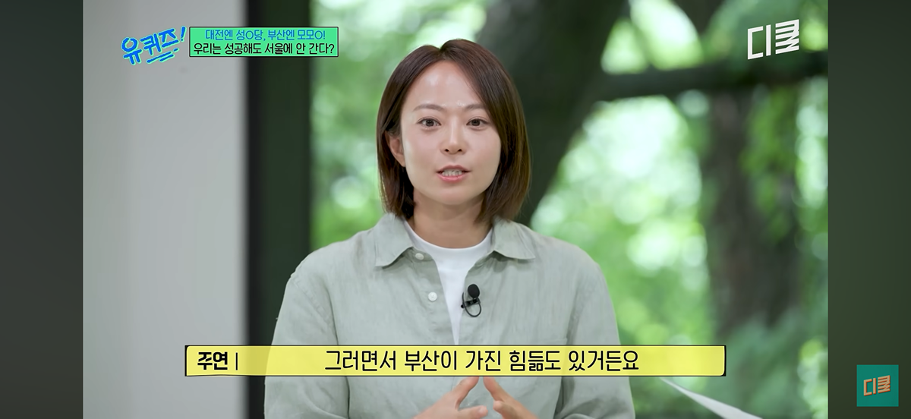
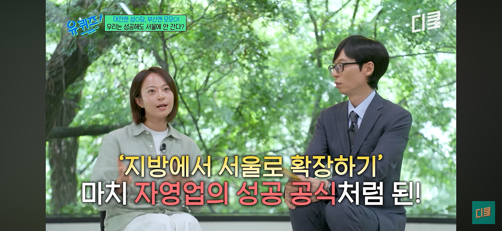
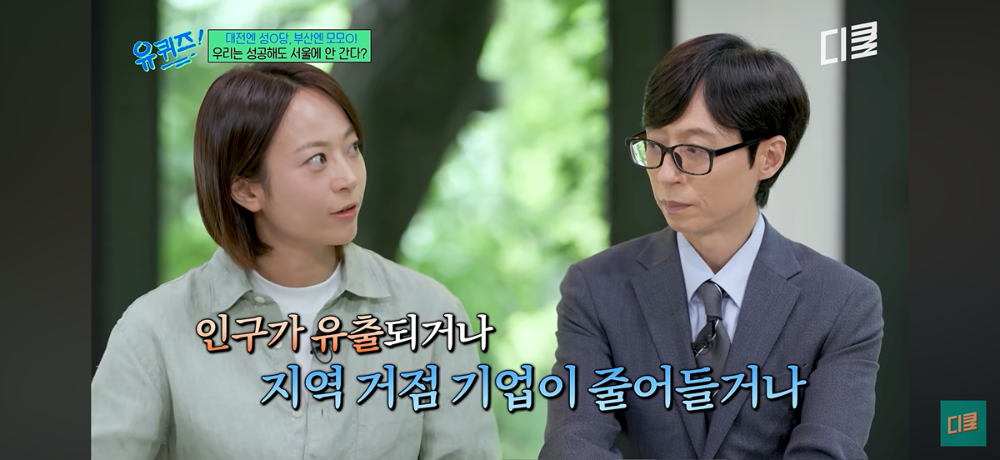
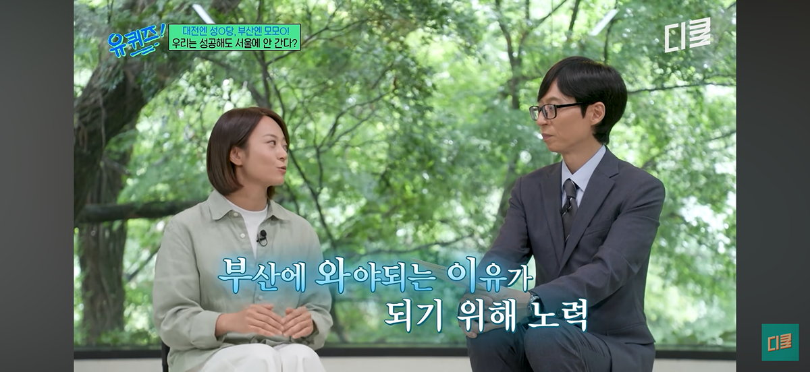
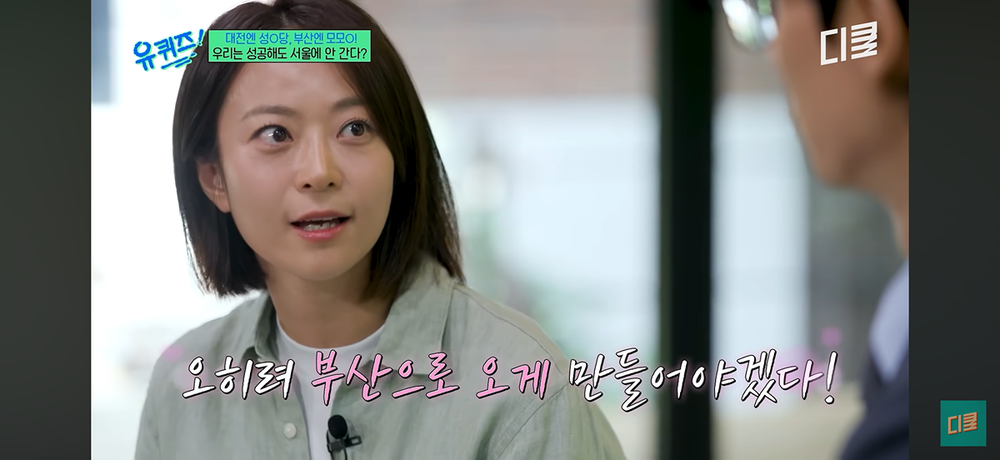
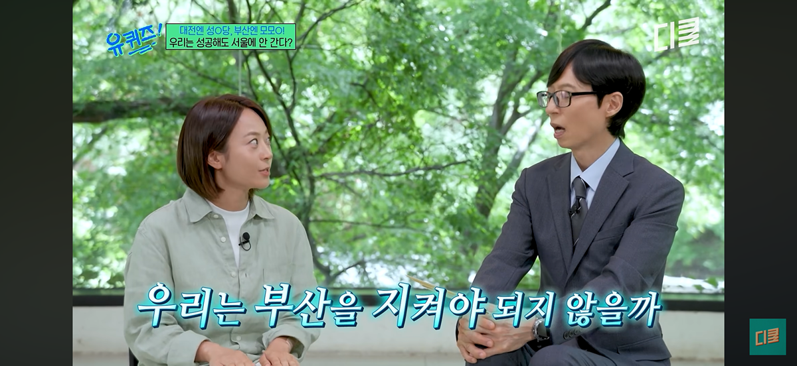

        오
댓글
수집 당시 댓글 23개
오름 · 4 시간 전
모모스 커피 원두 셀렉 잘하는듯 맛남
검은사막 · 4 시간 전
부산 텐퍼센트 커피 본점있잖어 내 인생커피 존맛
에쿠어스 · 4 시간 전
퍼센트 아라비카 카피캣아니냐
UFO · 1 시간 전
텐프로 커피라 했다가 혼났네;
호원동몽키스패너 · 4 시간 전
모모스 좋았던 애들은 담에 에어리도 가보셈. 내 기준 전국 top5 안에 들어가는 로스터리임ㅋㅋ
연골어류 · 4 시간 전
모모스 원두는 먹어본 적 없네 맨날 로스터릭만 먹어서
고오오급물리 · 4 시간 전
릭네 맛있긴 해 퀄리티 좋고 가격도 착하고 모모스는 나는 개인적으로 원두보다 콜브 RTD가 더 끌렸음
연골어류 · 4 시간 전
오 함 모모스 콜브도 알아봐야겟슴
함부르크훠궈복싱장 · 3 시간 전
대전 성심당처럼 지역 특화 브랜드 되면 지역 경제에 실제로 도움도 많이되고 좋은거지 그리고 저기 마셨던 커피 실제로 맛있었음
가끔은정줄을놓자 · 3 시간 전
나 얼마전에 친구랑 갔는데 맛있더라 저기
구름달 · 3 시간 전
저 전주연 대표가 세계바리스타 챔피언 출신이고, 다른 종목으로도 데리고 와서 모모스에 커피 세계챔피언만 3명임. 네임벨류나 실력이나 스페셜티 커피로 당연코 우리나라 탑 임
초코다이제 · 3 시간 전
아니 ㅁㅊ 나중에 부산 가면 꼭 가서 이것저것 마셔봐야겠다
팥팥콩팥 · 52 분 전
모모스는 ㄹㅇ 어디 바리스타챔피언십 우승자가 얼굴 마담만 하고 대충 젊고 예쁘장하게 생긴 알바생들 데리고 와서 요식행위만 하는 그딴 데랑은 차원이 다름. 매번 갈때마다 커피맛에 군더더기가 없다는 느낌을 받는다
구름달 · 3 시간 전
지금도 국내외 커피대회 우승자, 국자대표 계속 배출하고 있고 대놓고 성심당 모델 노리는거고 카페로 할 수 있다면 사실상 모모스가 가장 가능성있고 어느정도는 그런 수준이라고 생각함. 모모스 모르거나 무시한다는거 자체가 커피 알못 인증이지 ㅎ
초코다이제 · 3 시간 전
성심당 생각하면 좋은생각이긴 한듯
이부장 · 3 시간 전
눈이 무섭다
Rayless · 3 시간 전
안가요
쪼아요 · 2 시간 전
버라이어티 드립백 사서 먹어봤는데 프루티봉봉 맛있엇음
번째가슴 · 1 시간 전
남자냐 여자냐
로셩스 · 1 시간 전
브레빌 + 모모스 조합 좋지
폐폐 · 54 분 전
에스쇼콜라 므쵸베리 라떼로 먹으면 마시찌
폐폐 · 51 분 전
모모스 첨들어보는 커알못들이 쓰는 댓글들 재밌네
당직실에서먹고자고 · 40 분 전
커알못인데 여기 라떼 종류 먹어봤는데 뭔가뭔가 다르더라.